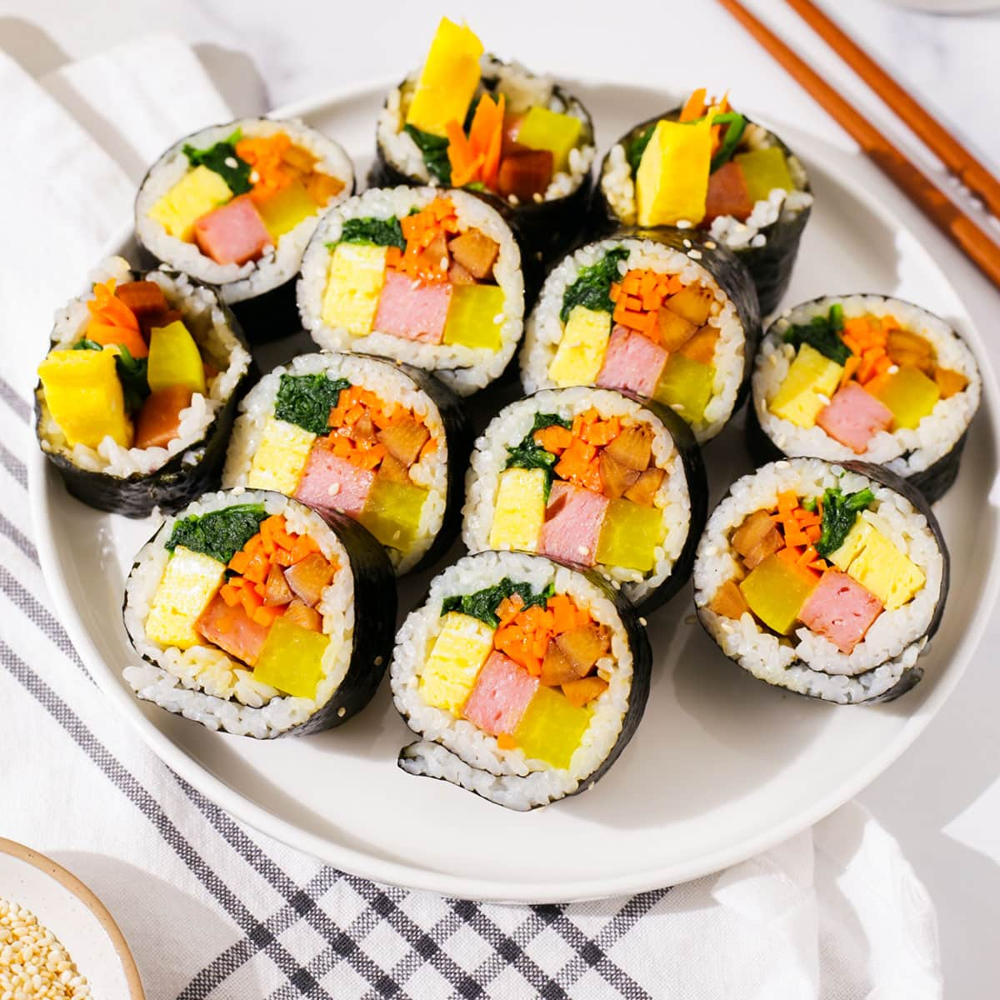
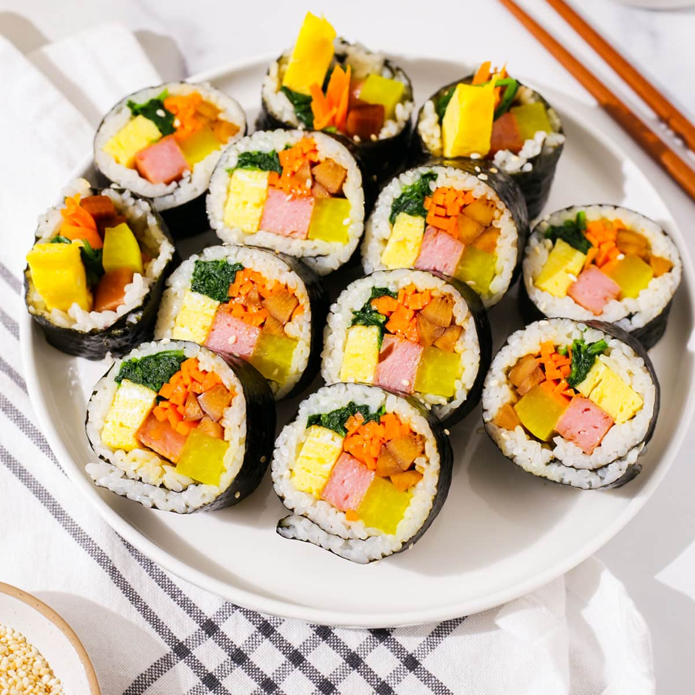
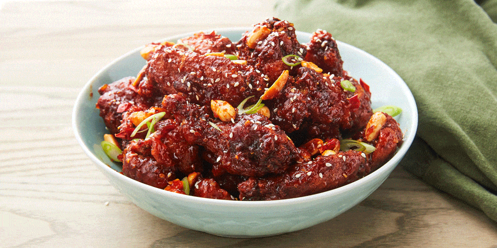

Korean Food Recipes
I am going to share two popular Korean dishes below. They are Kimbap and Korean fried chicken.
Recipe for Kimbap
Kimbap is a Koraen word which means seaweed and rice. It is a cooked white rice and different vegetables rolled with seaweed sheet. Sometimes, people think kimbap is Korean sushi
. The vegetables used can be changed for your preference.
 

Cooking Instructions
- Cook the eggs with oil on pan using medium heat. Then cut the egg it into long strips.
- Cook the carrots, crab sticks and kimbap ham until aromatic.
- Mix the cooked white rice with sesame oil and salt.
- Place dried seaweed sheet on the bamboo mat. Then, put the cooked white rice to cover around 2/3 of the dried seaweed sheet.
- Finally, put carrots, crab sticks, kimbap ham and egg strips to the rice and roll it. Then, cut it into a suitable pieces.
| Ingredient | Quantity |
|---|---|
| dried seaweed sheets | 4 pieces |
| spinach | 120 grams |
| eggs | 2 pieces |
| carrot | 120 grams |
| imitatied crab sticks | 4 strips |
| edible burdock root | 12 strips |
| cooked white rice | 2 cups |
| sesame oil | 2 tablespoons |
| salt | 1 tablespoon |
| Kimbap ham | 4 sticks |
Recipe for Korean fried chicken
Korean fried chicken is a popular street food and easy to cook. Unlike other fried chicken, Korean fried chicken usually light and crispy with thin flour and buttermilk. It is easier for you to cook it.

Cooking Instructions
- Mix the chicken, rice wine, ginger, salt and black pepper in a bowl. Then, coat the chicken with corn starch.
- Fry the chicken with oil in 175 degree celsius around 3-5 minutes.
- Mix tomato sauce, Korean chilli paste, honey, sugar, soy sauce, minced garlic and sesame oil in a pan. Then, stir and heat it with medium heat until it starts to boil. This is your Korean fried chicken sauce.
- Finally, mix the fried chicken with the Korean fried chicken sauce.
| Ingredient | Quantity |
|---|---|
| chicken wings, drumsticks and chicken thigh | 3 pounds |
| minced ginger | 2 tablespoons |
| cooking wine | 2 tablespoons |
| salt | 1 tablespoon |
| black pepper | half tablespoon |
| corn starch | 1 cup |
| tomato sauce | 3 tablespoons |
| Korean chilli paste | 2 tablespoons |
| honey | 4 tablespoons |
| sugar | 4 tablespoons |
| soy sauce | 2 tablespoons |
| minced garlic | 2 tablespoons |
| sesame oil | 1 tablespoon |